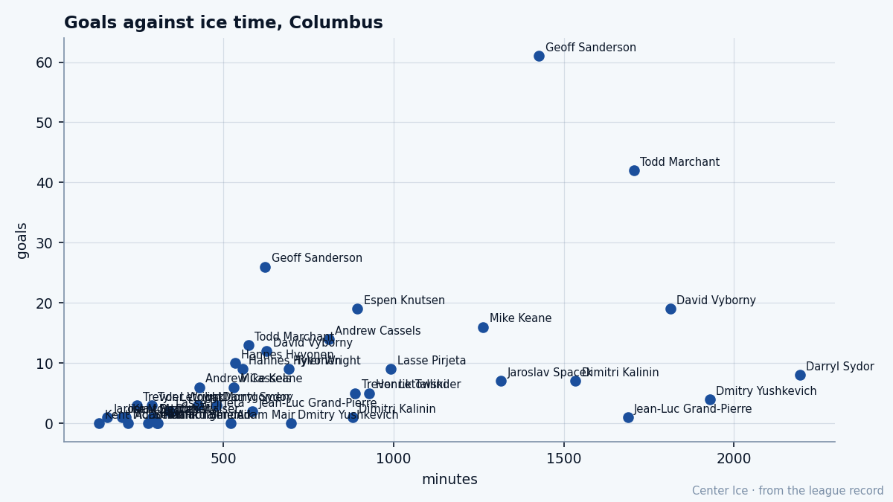

Sons of Hay River: where Geoff Sanderson learned to score
The Northwest Territories sent him to the league in 1990, and he has been putting goals up in cold buildings ever since.
 Tomáš VránaProfile writer · The Sweater
Tomáš VránaProfile writer · The Sweater Geoff Sanderson83 is 32 years old and the Bureau's Book still grades his speed at 93, the highest mark in the room he has carried in
Geoff Sanderson83 is 32 years old and the Bureau's Book still grades his speed at 93, the highest mark in the room he has carried in  Columbus Blue Jackets since the 2000 expansion draft. He has 26 goals and 53 points in 28 games, fourth in the league in goals behind the 33 of
Columbus Blue Jackets since the 2000 expansion draft. He has 26 goals and 53 points in 28 games, fourth in the league in goals behind the 33 of  Bill Guerin87, the 29 of
Bill Guerin87, the 29 of  Zigmund Palffy83 and the 28 of
Zigmund Palffy83 and the 28 of  Markus Naslund91. The Blue Jackets sit third in the Central with 31 points, and the goals that make them worth watching are mostly his. Sanderson scores, and the teams around him figure the rest out later.
Markus Naslund91. The Blue Jackets sit third in the Central with 31 points, and the goals that make them worth watching are mostly his. Sanderson scores, and the teams around him figure the rest out later.
He grew up in Hay River, on Great Slave Lake, in the Northwest Territories, and Hartford drafted him 36th overall in 1990. In his five full years there he scored 30-plus goals every season except the lockout year, and the Whalers missed the playoffs in every one of them. Nobody in the league has a longer record of putting the puck in the net in buildings with nothing left to play for by February.
Five 30-goal seasons, no springs
He followed the Whalers to Carolina when the franchise moved, was traded to  Vancouver Canucks halfway through 1997-98, then to
Vancouver Canucks halfway through 1997-98, then to  Buffalo Sabres within the same stretch of months. Buffalo got him to a Stanley Cup final in 1999.
Buffalo Sabres within the same stretch of months. Buffalo got him to a Stanley Cup final in 1999.  Dallas Stars took it in six games, the last one on a disputed
Dallas Stars took it in six games, the last one on a disputed  Brett Hull83 goal in triple overtime, and Sanderson was a third-line man in a room that nearly won it.
Brett Hull83 goal in triple overtime, and Sanderson was a third-line man in a room that nearly won it.
The 2000 expansion draft brought him to Columbus, a new franchise with no history and no patience yet. He scored 30-plus goals in 2000-01 and again in 2002-03, seasons the record keeps whole even if the standings do not. Last season he gave the Blue Jackets 64 games, 61 goals and 54 assists for 115 points, then went to Vancouver at the deadline, where his playoff run ended in a first-round loss to  Calgary Flames, one goal in his final postseason games. This winter he is back in a Columbus sweater, and the goals have not stopped.
Calgary Flames, one goal in his final postseason games. This winter he is back in a Columbus sweater, and the goals have not stopped.
| season | gp | goals | assists | points |
|---|---|---|---|---|
| 2003-04 | 64 | 61 | 54 | 115 |
| 2004-05 | 28 | 26 | 27 | 53 |

Last year, the man with the second-most goals in the building played 1,706 minutes and scored 42; he scored 61 in 1,427. The minutes are cheap in Columbus, and he is the only one who converts them.
The room is young; the goals are his
The Bureau's Book has him at overall 85, with his speed, acceleration, puck handling and shooting grades all in the 90s and a fighting grade of 50 that fits a man who has never needed to do anything but leave people behind. He plays 22.3 minutes a night, more than a man his age has any right to be asked, and he converts them the way he converted the 22.3 he played last year. The Bureau's Morale Scale has him at 92, which for a man who has spent his career on clubs that lose more than they win is practically a wonder.
The room around him is the youngest in the Central.  Pascal Leclaire86 is 20 and already graded 88 in goal;
Pascal Leclaire86 is 20 and already graded 88 in goal;  David Vyborny78 and
David Vyborny78 and  Todd Marchant82 carry the even-strength minutes beside him. The teammates say it plainly: when he is on, the game opens up, because the other bench has to respect the edge before it respects the shot. Give him a step and the puck is gone before anyone can close it, the way it has been gone since Great Slave Lake.
Todd Marchant82 carry the even-strength minutes beside him. The teammates say it plainly: when he is on, the game opens up, because the other bench has to respect the edge before it respects the shot. Give him a step and the puck is gone before anyone can close it, the way it has been gone since Great Slave Lake.
The contract is two years at $6.34M a season. For a club that has never had a winner, he is the rare piece the room cannot replace. He would tell you the only difference between an empty rink in Hay River and a full one in Columbus is the noise, and the noise has never changed where the puck goes. After five winters of watching Hartford go home in April, after the final in 1999 and the 30-goal seasons in a new market that nobody watched, Sanderson is 32 with a Book speed of 93 and 26 goals already banked.